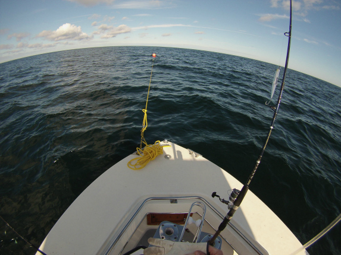

Now that the general informtion regarding the blufin tuna fishery and the equipment required for it has been covered, it's time to put all these pieces together and discuss how to actually fish for these incredible fish. Everything from finding a spot, anchoring up, catching bait, setting lines and fighting the fish will be discussed here. This page will take you chronologically through what a day of bluefin tuna fishing might look like.
Finding the right spot to fish is definitely the most critical part of the equation. Obviously, fishing where there are no fish will prove to be unsuccessful. As previously mentioned, Stellwagen Bank is a very popular area to fish for bluefin tuna throughout the entirety of the season. As is true with fishing for many other types of fish, finding structure underwater can usually be a productive spot to fish. Stellwagen Bank itself is a large area with many different locations to fish at, but the western edge of the bank, and specifically the southwest corner, is the most popular spot on the bank because of the structure of the sea floor and the drastic changes in water depth. At the southwest corner of the bank, the water depth goes from about 200 feet up to 70 feet within about 100 yards.
So let's say you've decided to fish at the southwest corner of Stellwagen Bank. You know there is bait in the area and the possibility of bluefin tuna swimming close by as well. Now it's time to find your own spot and anchor up to start fishing. Because Stellwagen Bank is such a popular location, there is often a large number of boats fishing there most days, especially on weekends, and unless you head out early and get there by 4 or 5 in the morning, there may already be as many as 30 boats within a few mile radius. If you're one of the first boats there, you can anchor wherever you want. However, if there are already multiple boats anchored up already, it's important to stay at least a half mile away from other boats. The reason for this is because bluefin tuna are extremely fast swimmers. If one is hooked in the middle of a bunch of boats right next to eachother, it will surely find an anchor line to swim around which will most likely break the fishing line. Once you have found a spot that is on the edge of the bank (120-150 feet deep) and you are far enough away from other fishing boats, it's time to drop the anchor. First, you should drive the boat a little bit up current of the exact spot you want to be over to account for the scope of the anchor line. Then you can toss the anchor off the front of the boat. The amount of anchor line you let out should be at least 3 times the water depth (if you are in 150 feet of water you should use at least 450 feet of anchor line) in order for the anchor to dig into the ground enough. Once you've done that, you can take the poly ball from the anchor retrieval system and tie it directly to the end of the anchor line and tie your floating polypropalene line to the poly ball as well. The purpose of the poly ball is to keep the end of your anchor line at the surface so you can easily detach from the anchor when hooked up to a fish and easily come back to pick it up. The purpose of the floating line is to put separation between your boat and the anchor line underwater so a bluefin tuna can't swim directly into it once hooked. Letting out 50 to 100 feet of the floating tag line is sufficient, and you can tie it off at the bow and get ready to start fishing.
Now that you're anchored in your spot, its time to start fishing for bait to put in the livewell. Many inshore anglers are familiar with catching baitfish using a sabiki rig. The same technique for catching baitfish applies here as well. You should keep an eye on your fish finder for balls of baitfish swimming under your boat and at what depths they are at. Baitfish such as mackerel, herring, whiting and squid can all be caught at Stellwagen Bank and all make great live baits for bluefin tuna. Once you catch the first baitfish you can begin setting out your tuna lines, but you should be periodically fishing for baitfish throughout the day to eep the livewell full incase you want to switch the baits out.
Now that you have live baits, it's time to put them on hooks and let them swim. Assumig you have two setups to fish with, you will be setting the two baits you put out at different depths to cover more of the water column. Bank sinkers and balloons are used in order to control the depth that the baits sit at. But first you need to bait your hooks. There are many different ways of doing this, but one of the most simple and effective ways to hook your live bait in the back just in front of the dorsal fin. Once youv'e but a bait on the first hook, you can toss it in the water and let it swim. The first line you set out will be farthest from the boat and closest to the surface. So for this bait, pull some line off the reel and tie a brightly colored balloon to the line about 30 or so feet from the hook. This will ensure that when you continue to let line off the reel, the bait will be suspended 30 feet underwater. The balloon will also be an indication of when you get a bite because the balloon will be pulled underwater. You should continue to let the current carry the balloon until it is about 100 feet away from the boat. For the second bait, you can hook it exactly the same as the first and try to set it so the bait is suspended at about 2/3 of the depth of the water you are in. So if it is 120 feet deep, you should try and set the bait at about 80 feet. The depth of this bait will not be controlled with a balloon. Instead you will use a lead sinker and let the line sit vertically from the rod tip directly under the boat. You should tie the lead sinker to the line about halfway to the hook, so if you want to set the bait at 80 feet deep, tie the sinker 40 feet up from the hook. If you tie the sinker too close to the hook, a tuna might see it and be spooked off. Also the natural tendancy of the baitfish will be to swim down in the water. After you tie the sinker on, pull off another 40 feet of line so the hooked bait is suspended 80 feet deep. Now, using a rubber band, take the line about 5 feet from the tip of the rod and tether it to the handle of the reel. Using a rubber band as a tether acts as a shock absorber so as the boat rocks back and forth over waves, your bait won't be bouncing up and down as well. You will also hear the rubber band snap if you get a bite. Now that you've set your baits out, be patient and wait for a bite! It is a good idea to check your baits every hour or so to make sure they are still lively and switch them out if necessary. Also, keep an eye on your fish finder for tuna swimming underneath to see what depths they are at so you can adjust your baits accordingly.
If you do eventually get a bluefin tuna to eat one of your baits, you will most certainly know when it happens. Either the balloon will disappear under the water or the rubber band will snap and line will start peeling off your reel. This is when it becomes extremely helpful to have at least two people on the bat. When this happens, go to the rod that got bit and try and make a couple of cranks on the reel to make sure the line is tight and has no slack in it. More often than not, the tuna will continue to take line off the reel for a solid 30 to 45 seconds without stopping. While this is going on, the other person on the boat should be reeling in the other line, starting the boat engine, and releasing the anchor line. Once all that has been done, and hopefully the fish is swimming away from your anchor line and towards open water, you can start slowly chasing the fish down with your boat to gain a lot of line back on the reel quickly. Always remember to keep the line tight and the rod should always have a bend in it. If there is any slack in the line, the hook could come loose. Depending on the size of the fish, the fight could last anywhere from 30 minutes to 3+ hours. Once the long battle is over and the fish is alongside the boat, assuming you are going to release, it is important to make sure the fish is not too fatigued so it can swim away safely. If the fish is still swiming strong, you can reach over and cut the line as closely to the hook as you can, which will fall out soon. However, if the fish is very slow and fatigued, you must help to revive the fish by holding the leader in your hands and having someone else but the boat in gear to slowly tow the fish. This will help to break up all the lactic acid that has built up in the fish from fighting so hard. As soon as the tuna starts begins to out swim the boat, it is healthy enough to release and you can cut the line.
At the end of your fishing trip, you have to pick up your anchor before leaving. The anchor retrieval system makes this process extremely easy. Here is a video of someone demonstrating how the system works and how easy it is to use:
Hopefully this information is a good jumping off point to get started in bluefin tuna fishing. As you spend more time on the water, you will learn a lot more like different spots, fishing techniques, and what works best for you on your boat. And remember that patience is key. This is arguably one of the most difficult fish to catch in the world, so don't get discouraged if it takes a while before you hook your first bluefin. If you would like to ask us any questions or provide us feedback, please visit our Contact page, and we will be sure to get back to you. Tight lines and good luck!